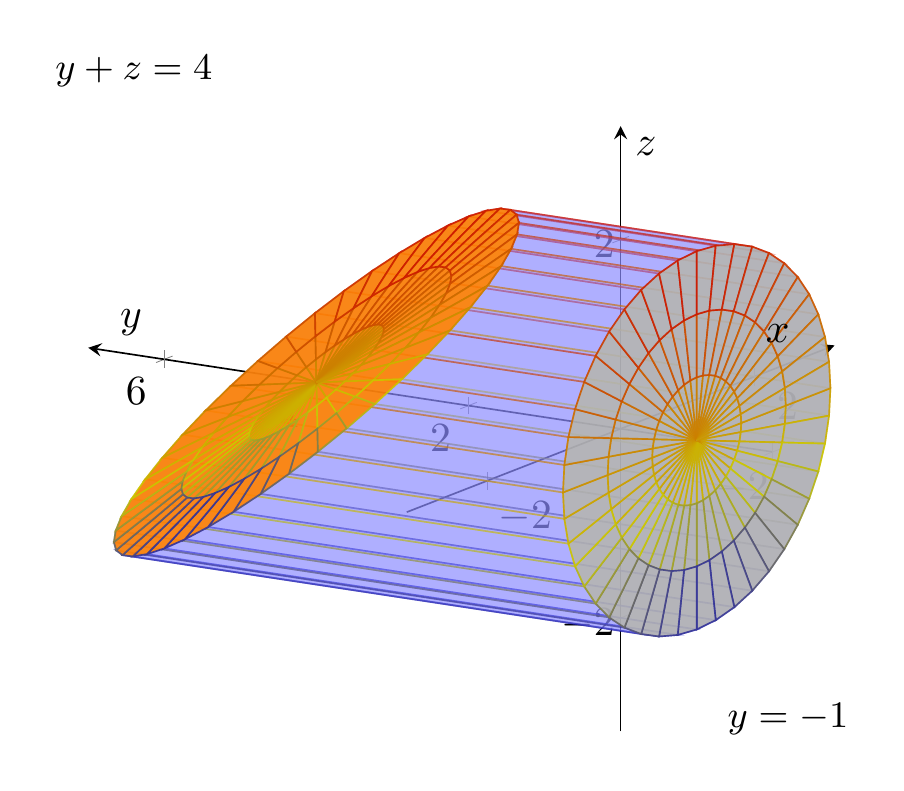
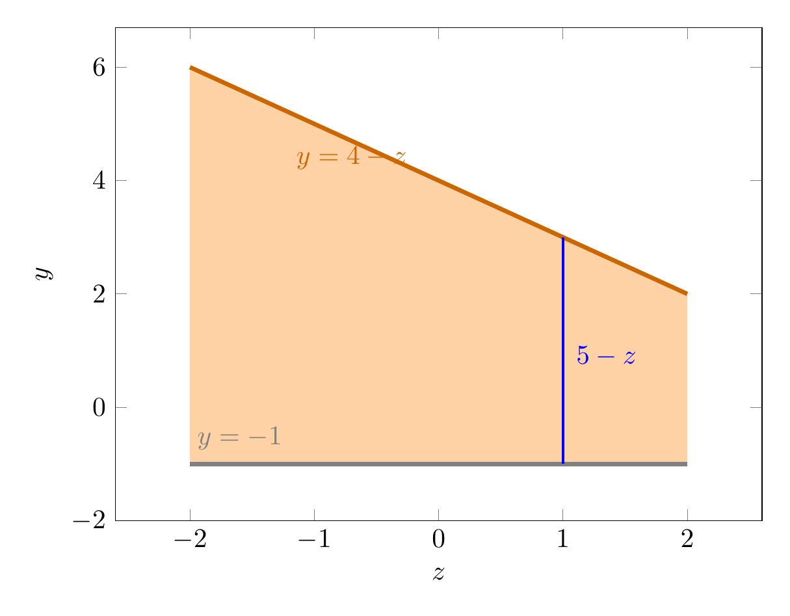

Please solve the problem in the following image.
(Image `20260928_145156_308322_utc_0800_0.png`. Alt text: Image: human_20260928_145156_308322_utc_0800)
20260928_145156_308322_utc_0800_0.png
End of problem
Answer
# Volume of a solid via a triple integral
**Problem.** Use a triple integral to find the volume of the solid enclosed by the cylinder $x^2+z^2=4$ and the planes $y=-1$ and $y+z=4$.
## Step 1 — Understand the geometry
- The cylinder $x^2+z^2=4$ has radius $2$ and its axis is the $y$-axis; by itself it is **infinite** in $y$ (a horizontal pipe).
- The plane $y=-1$ is **horizontal** (parallel to the $xz$-plane).
- The plane $y+z=4$, i.e. $y=4-z$, is **slanted**.
On the cylinder we always have $z\in[-2,2]$, so the slanted plane sits at
$$y=4-z\in[2,6],$$
which is entirely above the horizontal plane $y=-1$. Therefore the solid is exactly the part of the cylinder **between** the bottom plane $y=-1$ and the top (slanted) plane $y=4-z$.
---
\documentclass[border=10pt]{standalone}
\usepackage{pgfplots}
\pgfplotsset{compat=1.18}
\begin{document}
\begin{tikzpicture}
\begin{axis}[
view={-58}{18},
axis lines=center,
xlabel=$x$, ylabel=$y$, zlabel=$z$,
width=11cm, height=9cm,
xmin=-3.2, xmax=3.2, ymin=-2, ymax=7, zmin=-3.2, zmax=3.2,
]
% lateral surface, from y=-1 up to y=4-z
\addplot3[surf, color=blue!45, opacity=0.45, domain=0:360, y domain=0:1,
samples=45, samples y=2]
({2*cos(x)}, {-1 + y*(5 - 2*sin(x))}, {2*sin(x)});
% bottom flat cap (disk radius 2) at y=-1
\addplot3[surf, color=gray!60, opacity=0.9, domain=0:360, y domain=0:2,
samples=45, samples y=4]
({y*cos(x)}, {-1}, {y*sin(x)});
% top slanted cap at y=4-z
\addplot3[surf, color=orange, opacity=0.9, domain=0:360, y domain=0:2,
samples=45, samples y=4]
({y*cos(x)}, {4 - y*sin(x)}, {y*sin(x)});
\node at (axis cs:0,-2.2,-2.8) {\small $y=-1$};
\node at (axis cs:0,6.4,3.0) {\small $y+z=4$};
\end{axis}
\end{tikzpicture}
\end{document}

pgfplots_0.png
---
## Step 2 — Choose the order of integration
The cross-section of the cylinder perpendicular to the $y$-axis is a disk, so it is easiest to **project the solid onto the $xz$-plane**.
The projection is the disk
$$D:\; x^2+z^2\le 4.$$
For each point $(x,z)\in D$, the variable $y$ runs from the bottom plane up to the top plane:
$$-1\;\le\; y\;\le\; 4-z.$$
Hence the volume as a triple integral is
$$V=\iint_{D}\int_{-1}^{\,4-z}dy\,dA.$$
---
The integrand is the **height** of the solid above $(x,z)$:
$$\int_{-1}^{\,4-z}dy=(4-z)-(-1)=5-z,$$
so
$$V=\iint_{D}(5-z)\,dA.$$
The two views below show the projection disk (with its height field $5-z$) and a vertical cross-section $x=0$ (the trapezoid between the two planes).
---
\documentclass[border=10pt]{standalone}
\usepackage{pgfplots}
\pgfplotsset{compat=1.18}
\begin{document}
\begin{tikzpicture}
\begin{axis}[
xlabel=$z$, ylabel=$y$,
width=10cm, height=8cm,
xmin=-2.6, xmax=2.6, ymin=-2, ymax=6.7,
]
% the cross-sectional region (trapezoid)
\addplot[fill=orange!35, draw=none] coordinates {(-2,-1) (2,-1) (2,2) (-2,6)} \closedcycle;
% top boundary y = 4 - z
\addplot[orange!80!black, ultra thick, domain=-2:2, samples=2] {4 - x};
% bottom boundary y = -1
\addplot[gray, ultra thick, domain=-2:2, samples=2] {-1};
% a sample vertical slice of length 5-z at z=1
\addplot[blue, thick] coordinates {(1,-1) (1,3)};
\node[blue] at (axis cs:1.35,0.9) {$5-z$};
\node[orange!80!black] at (axis cs:-0.7,4.4) {$y=4-z$};
\node[gray] at (axis cs:-1.6,-0.55) {$y=-1$};
\end{axis}
\end{tikzpicture}
\end{document}

pgfplots_2.png
---
## Step 3 — Evaluate the integral
**Symmetry shortcut.** The disk $D$ is symmetric about the line $z=0$, and $z$ is odd there, so
$$\iint_D z\,dA=0.$$
Thus only the constant term survives:
$$V=\iint_D(5-z)\,dA=5\iint_D dA-\underbrace{\iint_D z\,dA}_{=0}=5\cdot\operatorname{area}(D).$$
Since $D$ is a disk of radius $2$,
$$V=5\cdot\big(\pi\cdot 2^2\big)=5\cdot 4\pi=20\pi.$$
**Direct check with polar coordinates** ($x=r\cos\theta,\; z=r\sin\theta,\; dA=r\,dr\,d\theta$):
$$V=\int_{0}^{2\pi}\!\!\int_{0}^{2}(5-r\sin\theta)\,r\,dr\,d\theta
=\int_{0}^{2\pi}\!\!\left(10-\tfrac{8}{3}\sin\theta\right)d\theta
=20\pi-0.$$
The $\sin\theta$ term integrates to $0$ over a full period, again giving $20\pi$.
**Direct check with the order $dy\,dz\,dx$:**
$$V=\int_{-2}^{2}\!\!\int_{-\sqrt{4-x^2}}^{\sqrt{4-x^2}}\!\!\int_{-1}^{\,4-z}dy\,dz\,dx
=\int_{-2}^{2}\!\!2\sqrt{4-x^2}\cdot 5\,dx
=5\cdot(4\pi)=20\pi,$$
since $\displaystyle\int_{-2}^{2}2\sqrt{4-x^2}\,dx$ equals the area of the disk of radius $2$, namely $4\pi$.
## Conclusion
The volume of the solid is
$$\boxed{20\pi}$$